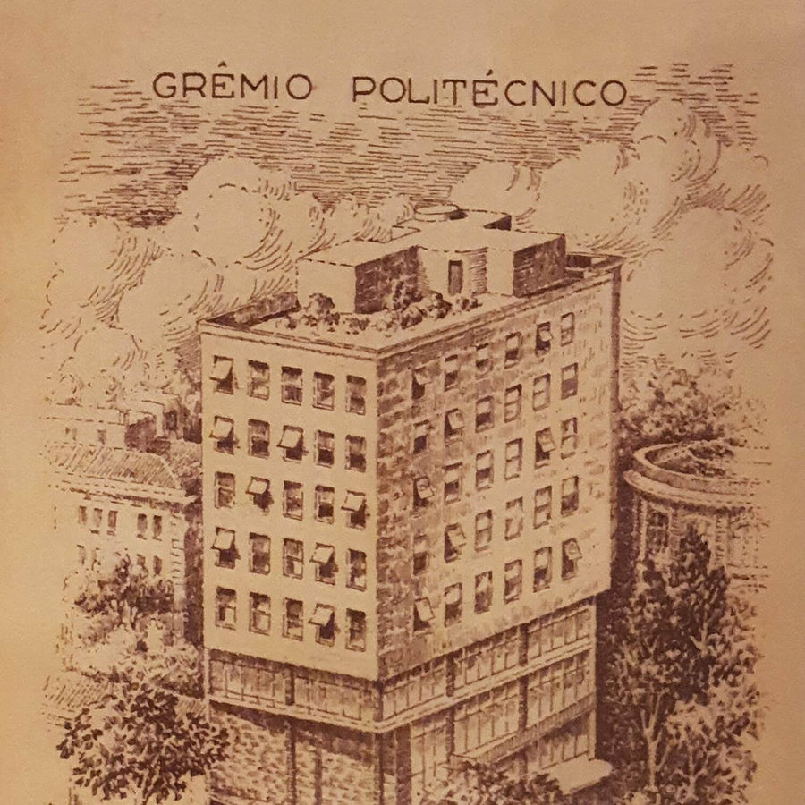

Sou aluno da Poli
Tudo o que você precisa está no Portal do aluno.
Cardápio do bandejão, salas livres, estudos, eventos, demandas e muito mais, num só lugar.
Entrar no Portal do alunoGrêmio Politécnico da USP · desde 1903
O Grêmio Politécnico representa os alunos da Escola Politécnica da USP, mantém projetos sociais e serviços que fazem parte da vida na Poli, e está trabalhando para voltar a ser uma instituição funcional, transparente e próxima de quem estuda aqui.
Sou aluno da Poli
Cardápio do bandejão, salas livres, estudos, eventos, demandas e muito mais, num só lugar.
Entrar no Portal do alunoEmpresas e instituições
Projetos sociais, eventos e grupos de extensão que alcançam milhares de alunos, com as contas abertas para todos verem.
Todas as páginas do Grêmio, da representação a cada projeto, num só lugar.
A Poli indo até as escolas públicas, abrindo as portas para quem ainda vai chegar e garantindo que dinheiro não seja barreira para aprender.
Desde 2023, politécnicos levam a universidade até escolas públicas. Mais de mil estudantes já foram alcançados.
Alunas do ensino médio de escolas públicas conhecem os laboratórios, as atividades estudantis e a rotina da Escola.
Uma programação dedicada às mulheres da Poli.
Bolsas integrais no Poliglota Idiomas, para que todo aluno possa estudar uma língua.
Mais de um século de história pede um Grêmio à altura. Estes são os compromissos da nova gestão, e cada um já tem lugar neste site.
As frentes de trabalho do Grêmio, com projetos que já fazem parte da vida na Poli. Cada uma tem sua página.
Apoie projetos sociais, a Semana de Recepção, a Feira de Extensão ou as Aulas Magnas. Toda parceria vira um projeto público, com prazo, objetivo e contas abertas.

Fundado em 1º de setembro de 1903 por estudantes da Escola Politécnica, o Grêmio é a segunda entidade estudantil mais antiga do Brasil.
Hoje é uma associação de representação estudantil e de serviços, formada por alunos e colaboradores, com impacto direto na vida de milhares de estudantes dentro e fora da Poli.
Viver de presente, consolidando o futuro.
Quer saber para onde o Grêmio vai agora? Conheça as propostas da chapa atual.